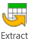
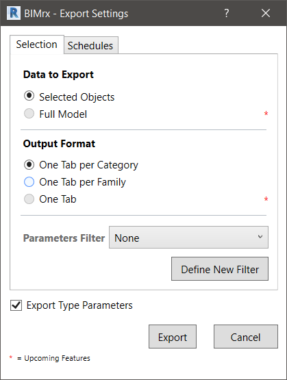
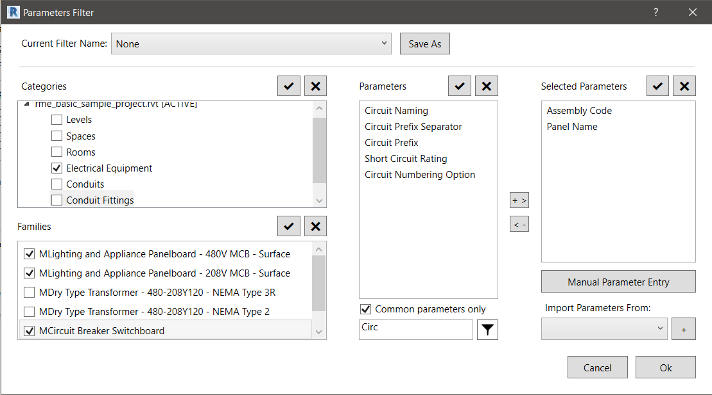
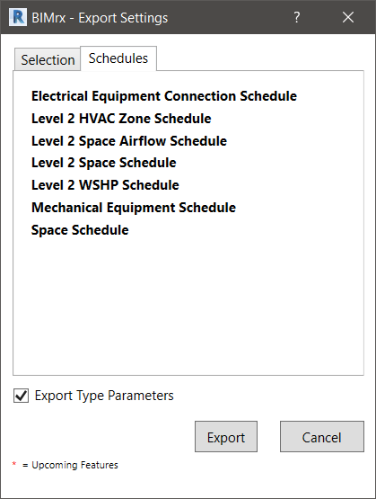

Export Settings
When exporting data to an Excel File you can choose between the two tabs in the Export Settings dialog
- Selection: to export the currently selected elements in the Revit model
- Schedules: to export the elements from an existing Revit schedule
Exporting the current selection
- With a selection of Revit model elements on screen: Navigate to BIMrx tab - BIMrx Core panel - Extract command

The BIMrx - Export Settings dialog box offers the following options for export:

Data to Export
- Selected Objects – elements selected in the Revit model will be exported
- *Full Model – all elements from the Revit model will be exporter (Future feature – Not implemented yet)
Output Format
- One Tab per Category – One Excel Sheet/Tab will be created for every Revit Category that is exported
- One Tab per Family – One Excel Sheet/Tab will be created for every Revit Family that is exported
- *One Tab – Every selected element will be exported to One Single Excel Sheet
(Future feature – Not implemented yet)
Parameter Filters - allows you to select preexisting Filters from a list
Define New Filters - allows you to define named filters for the Revit Element Parameters you want to export
Export Type Parameters - when checked the exported Excel file will contain a Sheet/Tab listing Type Parameters of the exported elements.
- This tab can/should be used to change Type Parameter values for the Import
Define New Filters - Parameter Filters
Upon selecting the Define New Filters button, the Parameter Filters dialog pops up, which allows you to define named filters for the Revit Element Parameters you want to export.
These filters are simple Named Lists of Parameter Names. The Manual Parameter Entry Option does not have to be existing Parameter Names that exist in Revit Elements.
During the process of exporting the parameters of a Revit Element, all the parameter names are checked against the list of Names in the Filter. If the parameter name appears in the list, then it will be filtered out and it won’t be exported.

To save for later use the current list of selected parameters in the Parameter Filter dialog, click the Save As (1) button and enter a name for the filter.
The latest set of parameters selected in the dialog, when not saved with a specific name, will be referred to as “Current/No-name” filter.
When initially invoked the dialog will display a list of the Categories that the current selection of Revit Elements belongs to (2).
Selecting one or more of these Categories will cause the Families window (3) to be populated with the family names of the current Revit selection that belong to the categories selected in the window above.
Finally, selecting one or more families will result in the Parameters window (4) to be populated with all the parameter names of the currently selected elements that belong to the families selected.
The list of parameters (4) can be filtered by clicking the Common Parameters Only checkbox (5) or by entering a Filter String and clicking the Filter Icon (6).
To add or remove one or more parameter names to the currently Selected Parameters list (7) you can double click a selection of parameters in the Parameters list (4) or the Selected Parameters list (7). You can also do this by clicking the “+ >” or “< -” buttons between the two lists.
At any time, you can manually enter a new Parameter Name to the list of Selected Parameter by using the Manual Parameter Entry button (8). Remember, these names do not have to be valid parameter names. They are just “strings” that will be used to filter parameters during export. However, for data to be extracted using the Manual Parameter Entry it does need to match a Parameter Name from selected elements.
At last, you can merge a previously named parameter filter list into the current one by selecting it from the Import Parameters From drop-down list and then clicking the “+” button (9)
Exporting from Schedules
The BIMrx - Export Settings dialog box offers another option/tab for export:

To Export Revit elements listed in a Schedule:
- Click the Schedules tab of the Export Settings dialog
- Select one or more Schedules by holding the Shift and/or Ctrl key
- Click the Export button.
Each Schedule selected will be exported to a separate Excel Sheet/Tab.
- Note: Some Scheduled are not supported. (ie. Schedule Keys or Material Takeoff schedules are not supported.)
Created with the Personal Edition of HelpNDoc: Easily create Qt Help files